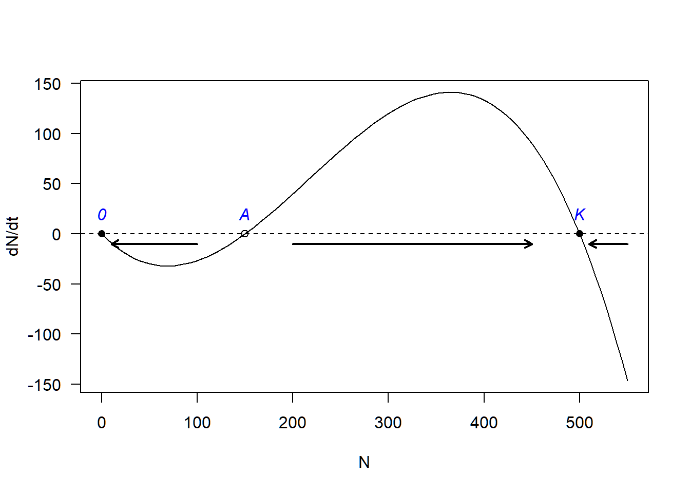
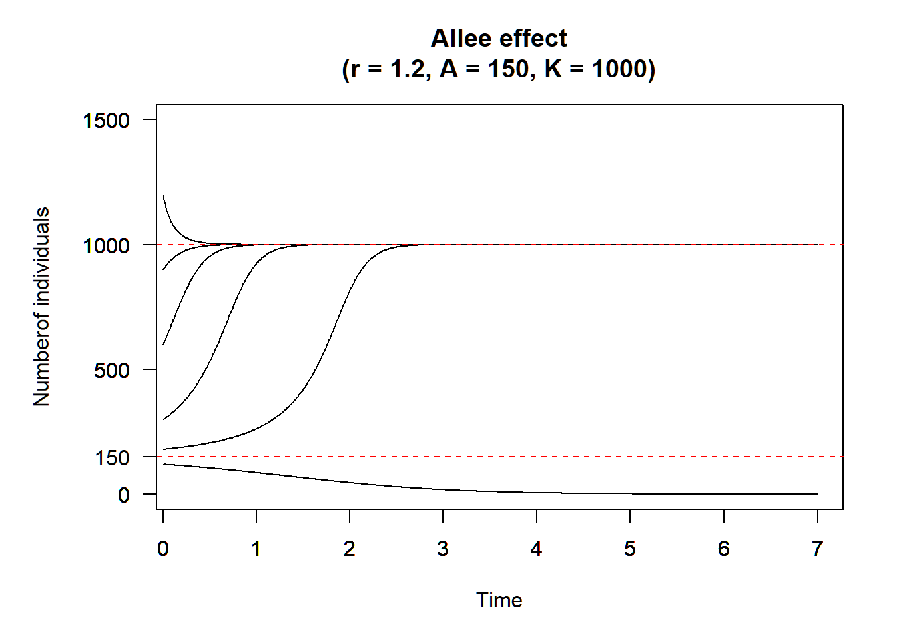

Week 3 - Logistic population growth and stability analysis
Part 1 - Shining app for logistic growth
Credit to Gen-Chang Hsu
Part 2 - Population growth with Allee effects
Some populations experience negative growth rates when the population size is too low, a phenomenon known as “Allee effect”. For example, some flowering plants require a minimal local density to attract pollinators (clustering effects). Below this density, pollinators will not be able to detect the presence of flowers and therefore the plants cannot complete their life cycle. Some flower species, e.g., Itea, requires a minimal population size of \(A\) to attract its specialized bee pollinator and its population growth is directly related to pollinator visitation, its population dynamics can be described using the below differential equation:
\[ \frac{dN}{dt} = rN(1-\frac{N}{K})(\frac{N}{A}-1) \]
where \(0 < A < K\). The term \(A\) represents “Allee threshold”, below which the population growth rate is negative (because of no visiting pollinators) and thus the population will decline; \(r\) is the intrinsic rate of increase and \(K\) is the carrying capacity.
- You can calculate the equilibrium population sizes and use the graphical method to determine their stability. The equilibrium population sizes are \(N^* = 0\) (stable), \(N^* = A\) (unstable), and \(N^* = K\) (stable).
r = 1
A = 150
K = 500
curve(r*x*(1-x/K)*(x/A-1), from = 0, to = 550, xlim = c(0, 550),
xlab = "N", ylab = "dN/dt", las = 1)
abline(h = 0, lty = 2)
points(y = rep(0, 3), x = c(0, A, K), pch = c(16, 1, 16))
text(x = c(0, A, K), y = rep(20, 3), labels = c("0", "A", "K"), font = 3, col = "blue")
arrows(x0 = c(100, 200, 550), y0 = -10, x1 = c(10, 450, 510), y1 = -10, length = 0.08, lwd = 2)
- Simulate the dynamics with an intrinsic rate of increase of \(r\) = 1.2, the carrying capacity of \(K\) = 1000, and the minimal threshold density of \(A\) = 150. Observe the population trajectories to see how different initial population sizes can lead to different equilibrium population sizes (a phenomenon known as “alternative stable states”).
library(deSolve)
Allee <- function(t, state, pars) {
with(as.list(c(state, pars)), {
dN_dt = r*N*(1-N/K)*(N/A-1)
return(list(c(dN_dt)))
})
}
t <- seq(0, 7, by = 0.01)
state <- c(120,180, 300, 600, 900, 1200)
names(state) <- rep("N", time = length(state))
pars <- c(r = 1.2, A = 150, K = 1000)
par(mar = c(5, 4+2, 4,2) + 0.1)
for(i in 1:length(state)){
#runthe ode solver
pop_size <- ode(func = Allee, t = t, y = state[i], par = pars)
plot(pop_size,ann = F, las =T, ylim = c(0, 1500), xlim = c(0.2,7))
par(new = TRUE)
}
abline(h = 1000, col = "red", lty = 2)
abline(h = 150, col = "red", lty = 2)
axis(side = 2, at = 150, las = T)
title(main = paste0("Allee effect\n(r = ",pars["r"],
", A = ",pars["A"],
", K = ",pars["K"], ")"),
xlab = "Time")
title(ylab = "Numberof individuals", line = 4)